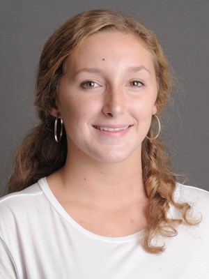

The Unknown of the Future
When I think about my future there is a lot of unknown. However, that is the beauty of the future because as much as you can try to plan for a certain outcome you are never guaranteed. For my plan, I would love to graduate from Washington and Lee having confidence in my abilites that will land me a wonderful job that I enjoy, that quite frankly won't even feel like work. I want to ensure that I am able to still maximize my life and go adventure, expand my interests, and never settle on what is important to me. With a lot of changes in the current world, I want to make sure I maintain normalicies, such as my passion for swimming that allows me to destress and stay active. I also want to be able to travel to different places to gain a better understanding of the world that we live in. This desire and plan for the future is everchanging, but wherever I end up I know that my hardwork and passion for what I do and believe in will always remain intact.
In order to answer the question of where I see myself in five years, I have to consider what my ideal life would be. So, in five years I will be graduated and be working the job I described earlier, most likely in the field of Economics. I hope to be financially stable to have my own place and not have to go to extreme budgeting measures. Although I do not think it will be in five years, I hope to have a family that I can support and create new memories with where I learn from them and everyone around them. I want to remain close with my friends from college and be able to expand my relationships to include both them and new people in my life. Most importantly, I want to evolve my own personality, keeping the traits I love most about myself and improving others through my life experiences. One can never fully plan out their life, but these are the core concepts that I will work towards for my future.